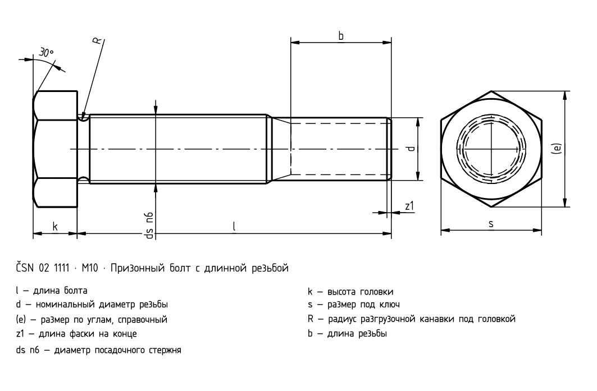
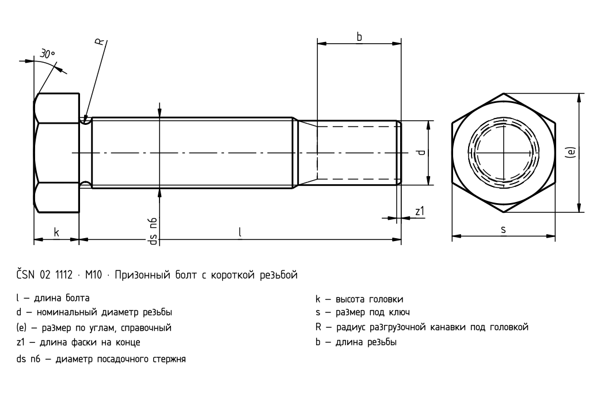

Призонные болты
Исторический источник; числовые значения и исключения не полностью сверены с действующим стандартом.


Исторический источник; числовые значения и исключения не полностью сверены с действующим стандартом.

